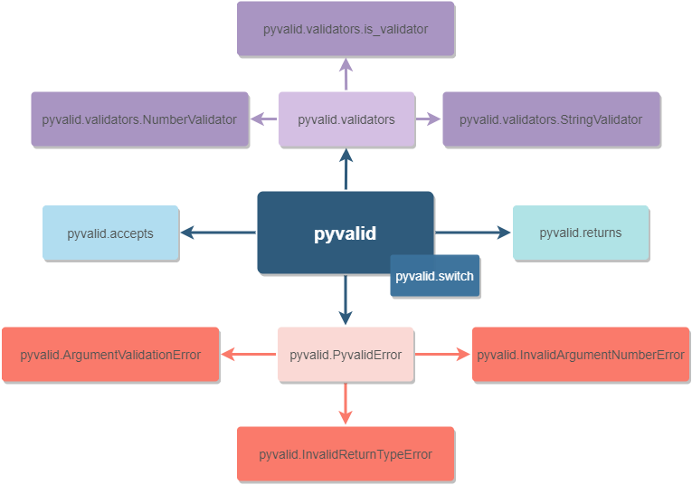

How to use¶
The schema below reveals the general structure of the pyvalid package:
{kind=link}
The package consists of two decorators: accepts and returns, which validates the function’s input and output values accordingly. To know how to validate the data, accepts and returns decorators should receive the information about excepted values/types/validators.
The very basic example below shows how to use accepts and returns decorators.
from pyvalid import accepts, returns
@accepts(int, int)
@returns(float)
def divide(num_1, num_2):
return num_1 / num_2
divide(8, 42)
# Returns float value
divide('Python', 42)
# Raises the ArgumentValidationError exception, since the 1st argument is
# the str value, when we're expecting int values only.
If just specifying an expected type or value is not enough, then it’s worth to
use the custom validator. All the built-in validators are located in the
pyvalid.validators module and it’s also possible to create a new one using
the is_validator decorator or through extending the AbstractValidator
class.
We can flexibly control the state of the pyvalid validation using the pyvalid.switch module. This module provides an ability to switch the pyvalid on/off.
In most cases, it’s worth to use the pyvalid features to validate incoming/outcoming data, such as: user input, the data sent to the API, etc.
But it’s also possible to use the pyvalid package as a part of the CI/CD processes only:
Apply the accepts and returns decorators to all needed functions and methods.
Perform unit testing, integration testing, etc.
The accepts and returns decorators will raise exceptions in case if the input/output data is not valid.
Collect information about raised exceptions and fix the code, which causes them.
Turn off the pyvalid before going live in order to avoid unnecessary exceptions in production.